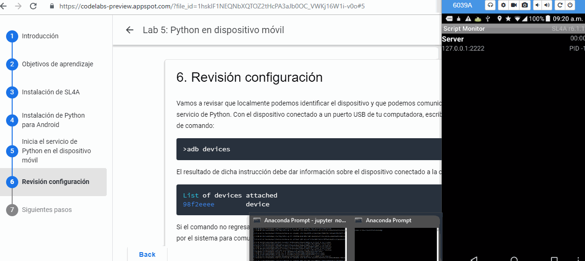

Llego el momento de poner todo nuestro sistema en accion! Ahora que cuentan con un sistema configurado con los elementos para programar en Python, vamos a usarlo para ejecutar acciones en el dispositivo movil pero desde su sistema local, generalmente una laptop con el software de Python y las configuraciones necesarias.
En el este laboratorio vamos a realizar un recorrido por la API de Python disponible a traves de SL4A para interactuar con el dispositivo.
Aunque esta no es la manera tradicional en que desarrollarían una aplicación móvil, al final del laboratorio verán la flexibilidad que proporciona un lenguaje interpretado para el prototipado de ideas, además de permitirles un control mucho mas avanzado de las funciones de su dispositivo móvil.
Esta laboratorio detalla los pasos para establecer conexion entre el dispositivo movil y su sistema local, permitiendoejecutar codigo en el dispositivo. A partir de esto, vamos a explorar la API de Python en Android de forma interactiva.
Revisemos primero los requerimentos para conectarse al dispositivo desde su sistema local. Cabe recordar que necesitaremos
android.py accesible al interprete1. Antes de comenzar, conectar el dispositivo movil a su computadora con un cable USB y asegurarse que el servicio de Python esta ejecutandose \ 2. Abre una libreta de Jupyter en tu sistema local y en un celda de codigo ejecuta las instrucciones que siguen |  |
Revisar que el dispositivo esta conectado a la computadora
!adb devices
Una vez iniciado el servicio de Python en el dispositivo, ejecuta lo siguiente
!adb forward tcp:9999 tcp:2222
Ahora invocamos el modulo android.py
import android
Creamos un objeto de la clase android que llamaremos droide
droide = android.Android()
droide.makeToast("Saludos RySI")
Si lograron establecer la conexion entre el dispositivo y su sistema, estan listos para comenzar a desarrollar en Android con Python. A continuacion escriban el siguiente codigo:
import android
droide=android.Android()
droide.makeToast("Hola desde Jupyter!")
Ahora ejecute el siguiente comando:
droide.vibrate(2500)
Ejecuten los siguientes comandos, observen lo que hace su dispositivo y vean la salida que se obtiene por el interprete:
droide.makeToast("RySi coloca texto aqui")
droide.vibrate(2500)
droide.notify("RySI", "Esta es una notificacion")
droide.wifiGetConnectionInfo()
Todos los comandos ejecutados por el interprete de Python en Android regresan con la misma estructura: un objeto identificado por Result con tres diccionarios, id, result y error. Si observan los diferentes valores del ientificador id en las salidas de los comandos anteriores, pueden notar que van incrementando en una unidad a partir de id=0. El objeto result consiste en un diccionario (pares llaves/valores) que contiene la informacion que la funcion regresa. En caso que la funcion no regresa nada, este diccionario tiene el valor None. Finalmente, error indica si se detecto algun error durante la ejecucion.
Duration 5:00
Podemos acceder a los valores que resulta del llamado a Android si asignamos una variable a la funcion. Ejecuten el siguiente codigo
wifiConnectionInfo = droide.wifiGetConnectionInfo()
La informacion desplegada anteriormente, ahora esta contenida en la variable wifiConnectionInfo y podemos extraerla de la siguiente forma:
print("El identificador del comando ejecutado es: %s"%wifiConnectionInfo.id)
print("El resultado del comando anterior es: %s"%wifiConnectionInfo.result)
print("El error al ejecutar el comando anterior es: %s"%wifiConnectionInfo.error)
Podemos acceder de manera iterativa a cada uno de los objetos regresados si lo incluimos en un
iterador (pueden encontrar mas informacion de iteradores en Python y funciones apropiadas para ello en este enlace).
wci=iter(wifiConnectionInfo)
print(next(wci))
print(next(wci))
print(next(wci))
Tambien podemos acceder a traves de una iteracion:
wci=iter(wifiConnectionInfo)
for r in wci:
print(r)
En muchas ocasiones nos interesa unicamente el resultado de la funcion. En ese caso lo asignamos a una variable, como en el ejemplo siguiente:
toast = droide.makeToast("Hola desde Jupyter!")
result = toast.result
print(result)
wifiConnectionInfo = droide.wifiGetConnectionInfo().result
wifiConnectionInfo
Como mencionamos, la estructura de result es un diccionario, un tipo de variable que se caracteriza por siempre ocurrir en pares de llaves/valores. Podemos acceder a las llaves con el metodo keys():
wifiConnectionInfo.keys()
y a los valores con el metodo values():
wifiConnectionInfo.values()
Los diccionarios pueden iterarse usando el metodoitems() del diccionario como sigue:
for k,v in wifiConnectionInfo.items():
print(v)
El metodo usado regresa una vista del conjunto de elementos del diccionario. Otra forma de acceder a los contenidos es usando iteritems(), viewitems().
wifiConnectionInfo.items()
Vamos a explorar varios de los comandos disponibles en la API y ejecutarlos de manera que puedan emplearlos en aplicaciones futuras. Vamos a utilizar la estructura de programacion modular que se emplea tradicionalmente con Python, de modo que encapsulamos cada llamada a la funcion de la API en una funcion que nos permite evaluar si se ejecuta correctamente. Todas las notas se obtuvieron de la documentacion de la API.
Comenzaremos con algunos ejemplos de rutinas generales de Android:
vibrate(
Integer duration[optional, default 300]: duration in milliseconds)
Vibrates the phone or a specified duration in milliseconds.
def test_vibrate():
result = droide.vibrate()
return result.error is None
test_vibrate()
makeToast(
String message)
Displays a short-duration Toast notification.
def test_make_toast():
result = droide.makeToast('Un brindis por ustedes!')
return result.error is None
test_make_toast()
notify(
String title: title,
String message)
Displays a notification that will be canceled when the user clicks on it.
def test_notify():
result = droid.notify('Primero el Titulo', 'Despues el mensaje de notificacion!')
return result.error is None
test_notify()
getClipboard()
Read text from the clipboard.
Returns:
The text in the clipboard.
setClipboard(
String text)
Put text in the clipboard.
def test_clipboard():
previous = droide.getClipboard().result
msg = 'Hola, clase!'
droide.setClipboard(msg)
echo = droide.getClipboard().result
droide.setClipboard(previous)
return echo == msg
test_clipboard()
ttsSpeak(
String message)
Speaks the provided message via TTS.
Requires API Level 4.
def test_speak():
result = droide.ttsSpeak('Hola, clase')
return result.error is None
test_speak()
dialogCreateAlert(
String title[optional],
String message[optional])
Create alert dialog.
dialogSetPositiveButtonText(
String text)
Set alert dialog positive button text.
dialogShow()
Show dialog.
dialogGetResponse()
Returns dialog response.
def test_alert_dialog():
title = 'Interfaz de usuario'
message = 'Bienvenidos a la prueba de integracion del curso.'
droide.dialogCreateAlert(title, message)
droide.dialogSetPositiveButtonText('Continuar')
droide.dialogShow()
response = droide.dialogGetResponse()
return response
test_alert_dialog()
dialogSetNegativeButtonText(
String text)
Set alert dialog button text.
dialogSetNeutralButtonText(
String text)
Set alert dialog button text.
def test_alert_dialog_with_buttons():
title = 'Alerta!'
message = ('Esta alerta tiene 3 botones y '
'espera a que presiones alguno.')
droide.dialogCreateAlert(title, message)
droide.dialogSetPositiveButtonText('Positive')
droide.dialogSetNegativeButtonText('Negative')
droide.dialogSetNeutralButtonText('Neutral')
droide.dialogShow()
response = droide.dialogGetResponse().result
return response['which'] in ('positive', 'negative', 'neutral')
test_alert_dialog_with_buttons()
dialogSetItems(
JSONArray items)
Set alert dialog list items.
def test_alert_dialog_with_list():
title = 'Alerta'
droide.dialogCreateAlert(title)
droide.dialogSetItems(['item 1', 'item 2', 'item 3'])
droide.dialogShow()
response = droide.dialogGetResponse().result
return True
test_alert_dialog_with_list()
dialogSetSingleChoiceItems(
JSONArray items,
Integer selected[optional, default 0]: selected item index)
Set dialog single choice items and selected item.
def test_alert_dialog_with_single_choice_list():
title = 'Alert'
droide.dialogCreateAlert(title)
droide.dialogSetSingleChoiceItems(['item 1', 'item 2', 'item 3'])
droide.dialogSetPositiveButtonText('Acepto')
droide.dialogShow()
response = droide.dialogGetResponse().result
return True
test_alert_dialog_with_single_choice_list()
dialogSetMultiChoiceItems(
JSONArray items,
JSONArray selected[optional]: list of selected items)
Set dialog multiple choice items and selection.
def test_alert_dialog_with_multi_choice_list():
title = 'Alert'
droide.dialogCreateAlert(title)
droide.dialogSetMultiChoiceItems(['item 1', 'item 2', 'item 3'], [])
droide.dialogSetPositiveButtonText('Acepto')
droide.dialogShow()
response = droide.dialogGetResponse().result
return True
test_alert_dialog_with_multi_choice_list()
dialogCreateSpinnerProgress(
String title[optional],
String message[optional],
Integer maximum progress[optional, default 100])
Create a spinner progress dialog.
dialogDismiss()
Dismiss dialog.
import time
def test_spinner_progress():
title = 'Ruedo sin parar'
message = 'Esta es una rueda de progreso simple.'
droide.dialogCreateSpinnerProgress(title, message)
droide.dialogShow()
time.sleep(2)
droide.dialogDismiss()
return True
test_spinner_progress()
dialogCreateHorizontalProgress(
String title[optional],
String message[optional],
Integer maximum progress[optional, default 100])
Create a horizontal progress dialog.
dialogSetCurrentProgress(
Integer current)
Set progress dialog current value.
def test_horizontal_progress():
title = 'Horizontal'
message = 'Esta es simplemente una barra de progreso horizontal simple.'
droid.dialogCreateHorizontalProgress(title, message, 50)
droid.dialogShow()
for x in range(0, 50):
time.sleep(0.1)
droid.dialogSetCurrentProgress(x)
droid.dialogDismiss()
return True
test_horizontal_progress()
getRunningPackages()
Returns a list of packages running activities or services.
Returns:
List of packages running activities.
def test_get_running_packages():
result = droid.getRunningPackages()
return result.error is None
batteryStartMonitoring()
Starts tracking battery state.
Generates "battery" events.
batteryGetStatus()
Returns the most recently received battery status data:
1 - unknown;
2 - charging;
3 - discharging;
4 - not charging;
5 - full;
batteryStopMonitoring()
Stops tracking battery state.
def test_battery():
droide.batteryStartMonitoring()
time.sleep(1)
try:
return bool(droide.batteryGetStatus())
finally:
droide.batteryStopMonitoring()
test_battery()
Event FacadeSensor Manager Facade
eventClearBuffer()
Clears all events from the event buffer.
eventPoll(
Integer number_of_events[optional, default 1])
Returns and removes the oldest n events (i.e. location or sensor update, etc.)
from the event buffer.
Returns:
A List of Maps of event properties.
def event_loop():
for i in range(10):
time.sleep(1)
droid.eventClearBuffer()
time.sleep(1)
e = droid.eventPoll(1)
if e.result is not None:
return True
return False
startSensingTimed(
Integer sensorNumber: 1 = All, 2 = Accelerometer, 3 = Magnetometer and 4 =
Light,
Integer delayTime: Minimum time between readings in milliseconds)
Starts recording sensor data to be available for polling.
Generates "sensors" events.
stopSensing()
Stops collecting sensor data.
def test_sensor():
# acelerometro 1 lectura por segundo
droid.startSensingTimed(2, 1000)
try:
return event_loop()
finally:
droid.stopSensing()
startLocating(
Integer minDistance[optional, default 60000]: minimum time between updates in
milliseconds,
Integer minUpdateDistance[optional, default 30]: minimum distance between
updates in meters)
Starts collecting location data.
Generates "location" events.
stopLocating()
Stops collecting location data.
def test_gps():
droid.startLocating()
try:
return event_loop()
finally:
droid.stopLocating()
getLastKnownLocation()
Returns the last known location of the device.
Returns:
A map of location information by provider.
def test_get_last_known_location():
result = droid.getLastKnownLocation()
return result.error is None
geocode(
Double latitude,
Double longitude,
Integer maxResults[optional, default 1]: maximum number of results)
Returns a list of addresses for the given latitude and longitude.
Returns:
A list of addresses.
def test_geocode():
result = droid.geocode(0.0, 0.0, 1)
return result.error is None
startTrackingPhoneState()
Starts tracking phone state.
Generates "phone" events.
stopTrackingPhoneState()
Stops tracking phone state.
def test_phone_state():
droid.startTrackingPhoneState()
try:
return event_loop()
finally:
droid.stopTrackingPhoneState()
toggleRingerSilentMode(
Boolean enabled[optional])
Toggles ringer silent mode on and off.
Returns:
True if ringer silent mode is enabled.
def test_ringer_silent():
result1 = droid.toggleRingerSilentMode()
result2 = droid.toggleRingerSilentMode()
return result1.error is None and result2.error is None
getRingerVolume()
Returns the current ringer volume.
setRingerVolume(
Integer volume)
Sets the ringer volume.
def test_ringer_volume():
get_result = droid.getRingerVolume()
if get_result.error is not None:
return False
droid.setRingerVolume(0)
set_result = droid.setRingerVolume(get_result.result)
if set_result.error is not None:
return False
return True
toggleWifiState(
Boolean enabled[optional])
Toggle Wifi on and off.
Returns:
True if Wifi is enabled.
def test_wifi():
result1 = droid.toggleWifiState()
result2 = droid.toggleWifiState()
droid.toggleWifiState(True) # Make sure wifi ends up ON, as it interferes with other tests
return result1.error is None and result2.error is None
Wow! Eso fue mucho trabajo! Pero para ahora saben un poco mas como utilizar las diferentes llamadas a la API. Por supuesto no hemos revisado ni una cuarta parte de la funcionalidad disponible! hay mas de 20 fachadas que integran las diferentes funcionalidades de la API, listadas a continuacion.
SL4A API Help
SL4A API Help
Allows you to return results to a startActivityForResult call | |
Some general purpose Android routines | |
Facade for managing Applications | |
Exposes Batterymanager API | |
Bluetooth functions | |
Access Camera functions | |
A selection of commonly used intents | |
Provides access to contacts related functionality | |
Manage the event queue | |
Provides Text To Speech services for API 3 or less | |
This facade exposes the LocationManager related functionality | |
This facade exposes basic mediaPlayer functionality | |
A facade for recording media | |
Exposes TelephonyManager functionality | |
This facade allows access to the Preferences interface | |
Exposes the SensorManager related functionality | |
Exposes phone settings functionality | |
Exposes SignalStrength functionality | |
Provides access to SMS related functionality | |
A facade containing RPC implementations related to the speech-to-text functionality of Android | |
Provides Text To Speech services for API 4 or more | |
Generate DTMF tones | |
User Interface Facade | |
A facade exposing some of the functionality of the PowerManager, in particular wake locks | |
Manages access to camera streaming | |
Wifi functions |